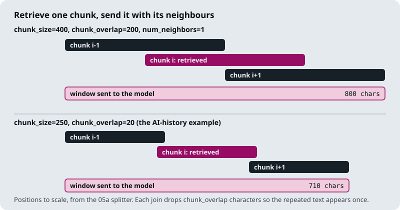
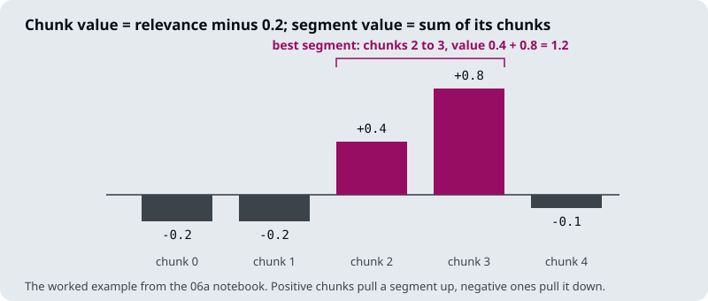

The running example is the Larkspur Cloud handbook from M10 to M12, and two of its golden questions: Can I export my data after I cancel my plan? (evidence: the export and retention chunks) and How long does a refund take? (evidence: refund-window and refund-timing). The first has a distractor that shares its words, the cancel chunk, which is the kind of near miss a reranker is for.
TL;DR
- Retrieval runs in two stages. A bi-encoder (with BM25 alongside it in the M16 hybrid) scores every chunk and returns a wide candidate list; a cross-encoder or an LLM reads each question and candidate together and reorders the list. Stage 1 is judged on recall at depth 50, stage 2 on precision in the top 5.
- The reranker only reorders what stage 1 returned. Evidence missing from the candidates stays missing, so recall at the first-stage depth caps everything after it.
- Reranking cost grows with the number of candidates. A cross-encoder runs one forward pass per question and chunk pair; the pointwise LLM reranker in
03a_reranking_methods.ipynbmakes onegpt-4ocall per candidate, up to 30 per question in its custom retriever. - Models use the start and end of a long prompt more reliably than the middle. Send a few chunks in rank order, best first, rather than a long list in retrieval order.
- After reranking, the context budget decides the shape of each chunk: compress it to the sentences that answer the question, or expand it to its neighbours when the answer runs across a boundary.
Mental model
- A customer asks “Can I export my data after I cancel my plan?”
- Stage 1 scores every chunk in the index and returns 50 candidates. The two evidence chunks are in the list, but not at the top.
- Stage 2 reads the question and each candidate together: 50 pairs, one cross-encoder pass each.
- The candidates are sorted by the new scores. The two evidence chunks, export and retention, move to the top, and the cut keeps 5.
- Each kept chunk is compressed to the sentences that answer, or expanded to its neighbours, within the context budget.
- The model reads the five chunks, best first, and answers with citations to the evidence.
Each stage has its own metric and its own failure. Stage 1 fails when the evidence is not among the candidates, stage 2 fails when the evidence is a candidate but does not reach the top 5, and the last step fails when the evidence reaches the prompt cut short or buried. Debug them in that order.
Recall@50 → precision@5
Lesson 18.1: Two-stage retrieval: retrieve wide, rerank narrow. Notebooks: 01a_two_stage_reranking.ipynb
What you’ll learn
- Explain why retrieval splits into a cheap wide stage and a slow narrow one.
- Trace Larkspur questions through both stages and read where each one fails.
- Diagnose a wrong answer by asking three questions in order, one per stage.
- Choose the first-stage depth from the recall curve and the latency budget.
- Explain why a model reads the middle of a long context least reliably, and what that means for the cut.
M16 and M17 widened what retrieval can find: two kinds of search, fused, and several phrasings of the question. A wider net catches more evidence and more noise with it. M18 decides what survives the cut to the model.
A Larkspur customer asks Do I get compensated when Larkspur has an outage? Three chunks of the 100-chunk handbook in this module’s lab answer it: sla, sla-claim and sla-exclusions. The embedding retriever ranks them 1st, 9th and 11th. The top 5 holds one of them and four distractors, including payment-methods and transfer, so precision@5 is 0.20. The evidence was found; it was found too low.
Two-stage retrieval gives each stage one job and one metric:
| Stage | Job | Metric | Cost per question |
|---|---|---|---|
| 1. Retrieve wide | Get the evidence somewhere into the candidate list | Recall@50 | One query embedding and an index lookup, nearly the same at any depth |
| 2. Rerank narrow | Put the evidence at the top and cut the rest | Precision@5 | One reranker pass per candidate: 50 passes at depth 50 |
Table 1: The two stages and their metrics.
The arrow in the heading is a ceiling. The top 5 after reranking is a subset of the candidates before it, so recall@5 after the rerank can never exceed recall at the first-stage depth. A reranker reorders; it cannot fetch. We call this the candidate ceiling.
Notebook 01a builds the smallest version: a vector search returns 8 chunks, and a small LLM reads all eight in one prompt and returns their indices in order of relevance, “retrieve many, keep few”. The lab scales it to the production shape and keeps the first stage dense only, so its numbers isolate the reranker. Stage 1 is all-MiniLM-L6-v2; stage 2 is one of two real cross-encoders, with latency measured on a laptop CPU. Here are four Larkspur questions through both stages, with the larger reranker:
| Question | Evidence ranks, stage 1 | Precision@5, stage 1 | Evidence ranks after rerank, k = 20 |
Precision@5 after | Rerank time |
|---|---|---|---|---|---|
| Do I get compensated when Larkspur has an outage? | 1, 9, 11 | 0.20 | 1, 3, 2 | 0.60 | 623 ms |
| Can I export my data after I cancel my plan? | 5, 1, 2 | 0.60 | 3, 1, 2 | 0.60 | 623 ms |
| How long until a refund shows up on my card? | 2, 1 | 0.40 | 1, 2 | 0.40 | 623 ms |
| Which plan should I pick for a PostgreSQL database? | 5, 52, 1 | 0.40 | 2, none, 3 | 0.40 | 623 ms |
Table 2: Two stages on four questions (the module’s rerank precision lab: all-MiniLM-L6-v2, then BAAI/bge-reranker-v2-m3 over 20 candidates).
Only the outage question gains. The export and refund questions already had their evidence in the top 5, so the reranker spends 623 ms reshuffling it. The PostgreSQL question shows the candidate ceiling: disk-iops sits at stage-1 rank 52, past any depth the lab offers, so no reranker can reach it and the fix belongs in stage 1.
The interactive rerank precision lab lets you move the depth and switch rerankers. Drop the outage question to k = 10 and sla-exclusions falls outside the candidates; precision@5 stops at 0.40.
Choosing the depth
Depth pulls in two directions. Recall at depth k never falls as k grows, because a deeper list contains the shallower one. Rerank cost rises with every candidate, and with the larger model it rises fast:
Depth k |
ms-marco-MiniLM-L-6-v2 (22M) |
bge-reranker-v2-m3 (568M) |
|---|---|---|
| 10 | 21 ms | 296 ms |
| 20 | 39 ms | 623 ms |
| 50 | 95 ms | 1,606 ms |
Table 3: Measured rerank latency by depth (the lab, laptop CPU).
For the outage question the depth stops mattering at 20: all three evidence chunks are candidates, and 50 costs 2.6 times as much for the same precision@5. The small model costs a sixteenth of the large one at k = 20 and lifts nothing on this set: it leaves the outage question at 0.20. A reranker’s size is not its value on your data.
To pick the depth for your own corpus, plot stage-1 recall at each depth on the golden set and find where it flattens. Past that point a deeper list only adds rerank latency. The notebooks in this module sit at the shallow end:
| Notebook | First stage returns | Reranker | Keeps |
|---|---|---|---|
01a |
8 | LLM, one listwise call | All 8, reordered |
02a |
LangChain’s default k |
BAAI/bge-reranker-base |
3 |
02b (optional) |
10 | ms-marco-MiniLM-L-6-v2 |
All 10, reordered |
03a, LLM |
15, or 30 in its custom retriever | An LLM, one call per chunk | 3, or 2 |
03a, cross-encoder |
10 | ms-marco-MiniLM-L-6-v2 |
5 |
Table 4: Depth and cut in the M18 notebooks.
When an answer is wrong, the two metrics say which stage to fix. Ask the questions in order:
flowchart TD
A{"Evidence in the<br/>top 50?"} -- no --> F1["Fix stage 1<br/>hybrid search (M16)<br/>query rewriting (M17)"]
A -- yes --> B{"Evidence in the top 5<br/>after the rerank?"}
B -- no --> F2["Fix stage 2<br/>reranker model<br/>input truncation"]
B -- yes --> C{"Answer uses<br/>the evidence?"}
C -- no --> F3["Fix the context<br/>order and budget<br/>(18.4 to 18.6)"]
C -- yes --> OK["Stages agree;<br/>check the prompt"]
Figure 1: Debug the stages in order. Each “no” names the stage to fix.
Lost in the middle
Liu et al. (Lost in the Middle: How Language Models Use Long Contexts, 2023) gave models a question with many retrieved passages and moved the one that held the answer through the list. Accuracy was highest with the answer near the start or the end of the context and lowest with it in the middle. M10 met the same effect when it raised k.
We call this buried evidence: the chunk reached the prompt and the model still did not use it. For a RAG pipeline it has three consequences:
- Send fewer chunks. With five chunks there is little middle to get lost in. If stage 1 sends 20 chunks for the export question and
retentionsits at position 11, it is in the part of the prompt the model reads least reliably. - Send them in rank order, best first.
01a’s last step does this: it rebuilds the list from the LLM’s ranking, so the chunk judged most relevant leads the prompt. - If you must send many, put the strongest at the edges. LangChain’s long-context reorder transformer places the highest-ranked documents at the start and the end and the weakest in the middle. The M18 notebooks do not use it; reranking and a small cut usually make it unnecessary.
Key distinction: precision@5 measures whether the evidence reached the cut. Lost in the middle is about whether the model used it once there. A small cut, best first, serves both.
In practice: Larkspur’s two-stage pipeline
- Measure stage-1 recall by depth on the golden set; for the lab’s outage question it flattens at 20.
- Rerank only where it pays. Table 2 says the reranker earns its 623 ms on the outage question and nothing on the other three; log which questions it changes.
- Send 5 chunks, best first.
- Send PostgreSQL-style misses back to stage 1: hybrid search or query rewriting, never a bigger reranker.
Lesson 18.2 opens the reranker itself: why reading question and chunk together judges relevance better than comparing two vectors.
Key Takeaways
- Judge stage 1 on recall at its depth and stage 2 on precision at the cut. A reranker reorders and cannot fetch (the candidate ceiling):
disk-iopsat rank 52 is out of reach at any lab depth. - Pick the depth where stage-1 recall flattens, and measure each reranker on your data: on the outage question the 568M model reaches 0.60 precision@5 at
k = 20(623 ms) and gains nothing more at 50 (1,606 ms), while the 22M model stays at 0.20. - Models read the middle of a long context least reliably (buried evidence). Send few chunks, best first.
Check yourself
1. The PostgreSQL question's disk-iops chunk sits at stage-1 rank 52. Why can no reranker in the lab fix it, and where does the fix belong?
A reranker reorders the candidates it is given and cannot fetch others. The lab’s deepest candidate list is 50, so disk-iops is never a candidate, and recall after the rerank can never exceed recall at the first-stage depth. The fix belongs in stage 1: hybrid search (M16) or query rewriting (M17).
2. With the bge reranker, the outage question scores precision@5 of 0.40 at k = 10 and 0.60 at both k = 20 and k = 50. Which depth do you pick, and why?
- At 10,
sla-exclusions(stage-1 rank 11) is outside the candidates. At 20 all three evidence chunks are candidates, and 50 adds nothing but latency: 1,606 ms against 623 ms. Pick the shallowest depth on the flat part of the recall curve that fits the budget.
3. Stage 1 sends 20 chunks for the export question, retention lands at position 11, and the answer ignores it. Why, and what should change?
Buried evidence: models use passages near the start or end of the context most reliably and the middle least, so position 11 of 20 is where evidence gets lost. Rerank, then send fewer chunks in rank order with the best first. If many must go, put the strongest at the edges.
Bi-encoder vs cross-encoder
Lesson 18.2: Cross-encoder reranking in a RAG chain. Notebooks: 02a_cross_encoder_reranking.ipynb, 02b_reranking_cross_encoder_walkthrough.ipynb (optional)
What you’ll learn
- Explain why reading question and chunk together judges relevance better than comparing two vectors.
- Trace the Larkspur export question as a cross-encoder demotes a distractor that shares its words.
- Place a reranker in a LangChain chain as a document compressor.
- Diagnose three production mistakes: a tiny candidate list, a model loaded per question, and a threshold on uncalibrated scores.
Lesson 18.1 treated the reranker as a box that lifts evidence from rank 9 to rank 3. This lesson opens it. Both stages read text with a transformer encoder; they differ in what goes into the encoder together:
flowchart TD
subgraph bi["Bi-encoder: stage 1"]
direction LR
BQ[/Question/] --> BE["Encoder<br/>question alone"] --> BS["Cosine with chunk<br/>vectors stored at<br/>index time"]
end
subgraph ce["Cross-encoder: stage 2"]
direction LR
CQ["Question + chunk<br/>as one input"] --> CE["Encoder<br/>attends across both"] --> CS["One relevance<br/>score per pair"]
end
BS ~~~ CQ
Figure 1: A bi-encoder encodes each text alone; a cross-encoder encodes the pair.
A bi-encoder turns the question and each chunk into vectors separately and compares them with cosine similarity. The chunk vectors are computed once, when the index is built, so answering a question costs one embedding and a nearest-neighbour search however large the index is. all-MiniLM-L6-v2, the first stage in lesson 18.1, has about 22M parameters and 384-dimensional vectors.
The price is that each chunk is summarised into one vector before any question exists, and that one vector serves every question. We call the result a near miss: a chunk that shares the question’s words and not its answer.
A cross-encoder reads the question and one chunk as a single input, so every question token can attend to every chunk token, and it outputs one relevance score. Nothing can be computed ahead of time, because the input depends on the question: scoring 50 candidates means 50 forward passes. That is why it runs only on the short list.
The near miss, traced
Can I export my data after I cancel my plan? has a near miss in the lab’s handbook: the cancel chunk (“You can cancel any plan from the Billing page. Cancelling stops the next charge…”) shares “cancel” and “plan” with the question and says nothing about data. Here are the bi-encoder’s top five and what the larger cross-encoder makes of them:
| Chunk | Bi-encoder similarity (rank) | Cross-encoder score (rank) | Evidence |
|---|---|---|---|
retention |
0.817 (1) | 0.993 (1) | ✓ |
cancel-access |
0.628 (2) | 0.907 (2) | ✓ |
cancel |
0.561 (3) | 0.001 (5) | |
refund-monthly |
0.502 (4) | below 0.001 (7 or lower) | |
export |
0.479 (5) | 0.064 (3) | ✓ |
Table 1: The export question’s top five, before and after BAAI/bge-reranker-v2-m3 over 10 candidates (the module’s rerank precision lab).
The bi-encoder puts cancel 3rd on shared vocabulary. The cross-encoder gives it 0.001 and lifts export, which says how to download the data, into 3rd place. Precision@5 is 0.60 either way here, because export was already 5th; the change is that the top 3 is now all evidence.
The two models compare like this:
| Bi-encoder | Cross-encoder | |
|---|---|---|
| Input | Question or chunk, alone | Question and chunk together |
| Output | A vector | A relevance score |
| Work at index time | Embed every chunk once | None |
| Work per question | One embedding, one index search | One forward pass per candidate |
| Used for | Stage 1 over the whole index | Stage 2 over the candidates |
| In these notebooks | all-MiniLM-L6-v2, OpenAI embeddings |
BAAI/bge-reranker-base, ms-marco-MiniLM-L-6-v2; Cohere’s hosted reranker in 18.6 |
Table 2: Bi-encoder against cross-encoder.
Wiring it into a chain
The two notebooks put the cross-encoder into a chain in different ways:
02auses LangChain’s wrapper. A Hugging Face cross-encoder loadsBAAI/bge-reranker-base, a cross-encoder reranker scores the candidates and keeps the top 3, and a contextual compression retriever runs it after the base retriever. In LangChain a reranker is a document compressor: it takes the retrieved documents and the question and returns fewer documents. Lesson 18.4 plugs an extractor into the same slot.02bwrites the step by hand. It builds question-and-chunk pairs, scores the whole list in one call, sorts by score and inserts the result into the chain as a plain function.
Three details in that code matter in production:
| Mistake | Where | Effect | Fix |
|---|---|---|---|
| Token rerank | 02a keeps LangChain’s default k for the base retriever |
The reranker picks 3 from a list barely longer than 3 | Raise the base retriever’s k to where stage-1 recall flattens (18.1) |
| Per-question load | 02b creates the cross-encoder inside its rerank function |
The model loads again on every question | Load it once at start-up |
| Reorder without a cut | 02b’s chain version returns all 10 reranked chunks |
The step reorders but never narrows | Slice to the top few, as 02b’s earlier cell does with the first two |
Table 3: Three wiring mistakes in the notebooks, and their fixes.
Scores rank; they do not measure
Look at the raw scores for the same export question from the two lab rerankers. The larger model gives retention 0.993 and cancel 0.001; the smaller one gives them 7.769 and minus 0.964. One outputs something like a probability, the other an unbounded logit. Both put the chunks in nearly the same order.
Cross-encoder scores rank the candidates for one question. Nothing guarantees that a score means the same thing across questions or across models. The 18.6 notebook notes that Cohere’s reranker returns values “very close to 0 or 1” and spreads them with a beta transform before using them.
Pitfall: a fixed threshold on reranker scores. A cut at 0.5 means something for the larger lab model and nothing for the smaller. Before you drop chunks below a score, check the score distribution on your golden set, for the exact model you run.
In practice: a cross-encoder for Larkspur
- Rerank 20 candidates from the hybrid first stage (M16), as lesson 18.1’s depth curve suggested.
- Load the model once, score all pairs in one batch, and keep the top 5.
- Rank, then cut by count, not by a score threshold, until the golden set shows a threshold that holds.
- Log both ranks for every cited chunk, so the near misses the reranker demotes are visible.
Lesson 18.3 asks whether an LLM can do the same job better, and what it costs to ask.
Key Takeaways
- A bi-encoder embeds chunks once and scales to the whole index; a cross-encoder reads question and chunk together and needs one forward pass per candidate, so it runs on the short list.
- Reading the pair demotes near misses: for the export question the
cancelchunk drops from bi-encoder rank 3 to cross-encoder 0.001, andexportrises to 3rd. - In LangChain a reranker is a document compressor. Raise the base
k, load the model once, cut to the top few, and never reuse a score threshold across models.
Check yourself
1. For the export question, why does the bi-encoder rank the cancel chunk 3rd while the cross-encoder gives it 0.001?
The bi-encoder summarises cancel into one vector before any question exists, and that vector sits near the question because both mention cancelling a plan. The cross-encoder reads the question and the chunk as one input and can see that the chunk says nothing about data, so it scores it near zero and lifts export instead.
2. Notebook 02b's rerank step is slow on every question and passes all 10 chunks to the model. What two changes fix it?
Load the cross-encoder once at start-up instead of inside the rerank function, where it loads again on every question. Then slice the sorted list to the top few, so the step narrows as well as reorders.
3. A teammate drops every chunk with a reranker score below 0.5, then swaps in a smaller cross-encoder. What breaks, and what should they do instead?
The two lab rerankers score on different scales: the larger one outputs values like 0.993 and 0.001, the smaller one logits like 7.769 and minus 0.964. A 0.5 cut means something for one and nothing for the other. Cut by count, or set any threshold from the score distribution of the exact model on the golden set.
LLM reranker or cross-encoder
Lesson 18.3: LLM reranking vs cross-encoder reranking. Notebooks: 03a_reranking_methods.ipynb
What you’ll learn
- Compare listwise LLM, pointwise LLM and cross-encoder reranking by calls, output and failure.
- Diagnose three LLM reranking failures: the silent drop, score ties and serial latency.
- Do the arithmetic on calls and ties for a candidate list of 15.
- Choose a reranker for Larkspur by traffic and stakes.
Lesson 18.2 showed a cross-encoder demoting a near miss by reading question and chunk together. An LLM reads them together too, and it can also follow an instruction. Larkspur’s handbook holds an archived refund policy alongside the current one; “prefer the current policy” is an instruction no cross-encoder can take.
An LLM can rerank in two ways, and this module shows both:
- Listwise: one prompt holds every numbered candidate and asks for their indices from most to least relevant. Notebook
01adoes this with eight candidates. - Pointwise: one call per candidate rates it on a scale of 1 to 10, read back through structured output; the scores are then sorted. Notebook
03adoes this with an LLM at temperature 0 and keeps the top 3.
Here is how the three rerankers spend their calls on one question:
flowchart TB
subgraph L["Listwise LLM"]
direction LR
L1["1 prompt<br/>all candidates"] --> L2["Parse an order<br/>from text"]
end
subgraph P["Pointwise LLM"]
direction LR
P1["1 call per<br/>candidate"] --> P2["Sort the<br/>1 to 10 scores"]
end
subgraph C["Cross-encoder"]
direction LR
C1["1 batched pass<br/>over all pairs"] --> C2["Sort the<br/>scores"]
end
Figure 1: Three ways to rerank one candidate list.
03a also builds a cross-encoder retriever that retrieves 10 chunks and keeps 5, after one batched scoring call over the 10 pairs with ms-marco-MiniLM-L-6-v2. The three compare like this:
Listwise LLM (01a) |
Pointwise LLM (03a) |
Cross-encoder (02a, 03a) |
|
|---|---|---|---|
| Calls per question | 1, holding every candidate | 1 per candidate: 15 in the example, up to 30 in 03a’s custom retriever |
1 batched pass over all pairs |
| Runs on | A hosted LLM | A hosted LLM | Your own CPU or GPU |
| Output | Text to parse into an order | A score from 1 to 10 per chunk | A score per pair |
| Sees other candidates | Yes | No | No |
| Fails by | Dropping or repeating indices | Ties, slow sequential calls | Truncating chunks longer than its input limit |
Table 1: Three rerankers compared.
How each one fails
Each failure in Table 1’s last row shows up in the notebook code.
The silent drop. 01a’s parser keeps only the tokens that are digits and rebuilds the list from them. A chunk the LLM leaves out of its answer disappears from the result, and nothing reports it. Check that the returned indices are a permutation of the inputs, and append any missing ones at the end.
Score ties. Fifteen candidates scored in whole numbers from 1 to 10 cannot all differ: there are only ten values, so at least six candidates share their score with another candidate. In practice an LLM uses fewer than ten values, so ties are larger. The sort keeps tied chunks in their stage-1 order, so the reranker decides less than it appears to.
Serial latency. The pointwise loop calls the model once per document, one after another. The arithmetic, with an assumed 1 second per call:
| Candidates | Sequential calls | Wall-clock, sequential | Wall-clock, 10 in parallel |
|---|---|---|---|
| 15 | 15 | about 15 s | about 2 s |
| 30 | 30 | about 30 s | about 3 s |
Table 2: Pointwise LLM reranking latency (illustrative: assumes 1 s per call and no rate limits).
Parallel calls fix the latency, not the cost: 30 calls are billed as 30 whichever way they run.
Pitfall: the silent drop. Any reranker whose output is parsed from text can lose candidates without an error. Assert that every input index comes back exactly once.
03a’s last example builds a corpus of five chunks to show why reranking helps. Three are short sentences that repeat the question’s words without naming the city (“The capital of France is great.”), and two are longer passages about visiting Paris. It prints the top 2 by plain similarity next to the top 2 from the LLM reranker. The notebook ships without outputs, so the comparison has to be run to be read; this page quotes no result from it.
Choosing for Larkspur
The choice comes down to traffic and stakes:
flowchart TD
A{"Needs an instruction,<br/>e.g. prefer current policy?"} -- no --> CE["Cross-encoder"]
A -- yes --> B{"Low volume,<br/>high stakes?"}
B -- yes --> LLM["LLM reranker<br/>on the top 10"]
B -- no --> MD["Metadata filter<br/>then cross-encoder"]
Figure 2: Default to a cross-encoder; pay for an LLM only when an instruction matters and traffic is low.
A cross-encoder runs locally with no per-call fee and no parsing step to fail, so it is the default second stage. An LLM reranker earns its cost on low-volume, high-stakes questions where it can follow an instruction. A middle path is to let the cross-encoder cut 50 candidates to 10 and the LLM order the last 10.
The archived-policy problem has a cheaper answer than either. A version filter before ranking (lesson 16.5) removes the old policy outright, so no reranker has to be told to prefer the new one.
In practice: Larkspur’s second stage
- Cross-encoder by default, over 20 hybrid candidates, as lessons 18.1 and 18.2 set up.
- Version filter before ranking, so instructions about freshness are not needed.
- LLM reranker for escalations only: billing disputes routed to a human-review queue, a few dozen a day, on the cross-encoder’s top 10.
- Compare on precision@5 and p95 latency together on the golden set; a reranker that wins on one and loses badly on the other does not ship.
Ranking decides which chunks reach the prompt. Lesson 18.4 decides how much of each one does.
Key Takeaways
- A listwise LLM sends every candidate in one prompt, a pointwise LLM rates each chunk in its own call, and a cross-encoder scores all pairs in one batched pass on your own hardware.
- Listwise parsing can drop candidates silently, pointwise scores tie (15 candidates on a 10-point scale must share values) and add a call per candidate, and cross-encoders truncate long chunks.
- Default to a cross-encoder; use an LLM reranker for low-volume, high-stakes questions that need an instruction, and filter stale versions out before either.
Check yourself
1. A listwise LLM reranker returns its order as text, and one chunk never appears in the final list. What happened, and what check prevents it?
The silent drop: the parser rebuilds the list only from the indices the model wrote, so a chunk the model left out disappears without an error. Assert that the returned indices are a permutation of the inputs, and append any missing ones at the end.
2. A pointwise LLM reranker scores 15 candidates in whole numbers from 1 to 10. Why must some tie, and what decides their order?
There are only ten possible values for fifteen candidates, so at least six share their score with another, and an LLM usually uses fewer values. The sort is stable, so tied chunks keep their stage-1 order: the reranker decides less than it appears to.
3. Larkspur wants the reranker to prefer the current refund policy over an archived copy. Which tool do you reach for first?
A version metadata filter before ranking. It removes the archived copy outright, so no reranker has to be instructed. Only if a real instruction remains, on low-volume, high-stakes traffic, does an LLM reranker over the cross-encoder’s top 10 earn its per-call cost.
Context budget
Lesson 18.4: Contextual compression. Notebooks: 04a_contextual_compression.ipynb
What you’ll learn
- Explain the context budget and which post-retrieval steps save or spend it.
- Trace a chunk through an extractor, and see the compressor slot that rerankers and filters share.
- Diagnose a compressed chunk that lost the condition on a rule.
- Plan saving and spending together for one Larkspur pipeline.
Lessons 18.1 to 18.3 decided which chunks reach the prompt. Each one still arrives whole, and most of a chunk is usually not about the question.
The context budget is the share of each prompt that retrieved text may take. Four things set it: the model’s context window, the cost of input tokens, the latency of reading them, and the position effect from lesson 18.1, which makes a long context less reliable than a short one.
Every step after retrieval either saves from that budget or spends it:
| Step | Lesson | Effect on the budget | What it costs |
|---|---|---|---|
| Cut to the top few after reranking | 18.1 to 18.3 | Saves: fewer chunks | Rerank latency |
| Drop chunks that do not answer | 02b (optional) |
Saves: whole chunks | One LLM call per chunk |
| Extract the relevant sentences | 18.4 | Saves: shorter chunks | One LLM call per chunk |
| Add the neighbouring chunks | 18.5 | Spends: 800 characters per hit at 05a’s settings, twice the chunk |
A lookup per neighbour |
| Rebuild contiguous segments | 18.6 | Spends: up to 30 chunks of 800 characters, 24,000 characters, at 06a’s settings |
A reranker pass over the document’s chunks |
Table 1: Post-retrieval steps and the budget.
Saving and spending go together. Here is one budget of 4,000 characters of retrieved text, spent three ways (Illustrative, using 05a’s split of 400-character chunks with 200 of overlap):
| Plan | Hits kept | Characters per hit | Total |
|---|---|---|---|
| Plain chunks | 10 | 400 | 4,000 |
| Each hit with both neighbours (18.5) | 5 | 800 | 4,000 |
| Each hit compressed to its relevant sentence | about 30 | about 130 | about 4,000 |
Table 2: One budget, three shapes (illustrative).
A pipeline that expands each hit to its neighbours can afford it by keeping five hits instead of ten. One that compresses each chunk can keep many more, if it trusts the compressor.
Extraction
Contextual compression cuts each retrieved chunk down to the parts that bear on the question. Notebook 04a uses an LLM chain extractor, wrapping a small chat model at temperature 0, inside the contextual compression retriever, the same wrapper lesson 18.2 used for the cross-encoder. For each retrieved chunk the extractor asks the LLM to copy out only the relevant parts; a chunk with nothing relevant comes back empty and is dropped. A question-answering chain then answers from what is left.
All three post-retrieval moves fill the same slot:
flowchart LR
R["Base retriever<br/>top k chunks"] --> S{"Compressor<br/>slot"}
S -- rerank --> A["CrossEncoderReranker<br/>fewer chunks, reordered<br/>(18.2)"]
S -- extract --> B["LLMChainExtractor<br/>shorter chunks<br/>(18.4)"]
S -- filter --> C["Yes or no per chunk<br/>whole chunks dropped<br/>(02b)"]
Figure 1: The compressor slot. The retriever and the chain stay the same whichever compressor fills it.
Here is what extraction does to one Larkspur chunk for How long does a refund take?:
| Text | |
|---|---|
Retrieved chunk (refund-timing) |
Refunds go back to the original payment method and take 5 to 10 business days to appear on your statement. |
| Extracted | take 5 to 10 business days to appear on your statement |
Table 3: Extraction keeps the answer and drops the rest (illustrative extraction).
Where compression lies
Compression has the same risk as M12’s propositions: an LLM sits between the source and the prompt. Ask Can I get a full refund on my annual plan? and the refund-window chunk comes back. Two extractions are plausible:
| Extraction | Kept | Answer the model gives |
|---|---|---|
| Faithful | “An annual plan can get a full refund within 30 days of purchase if the account used less than 100 GB of outbound traffic.” | Yes, within 30 days and under 100 GB |
| Lossy | “An annual plan can get a full refund within 30 days of purchase” | Yes, within 30 days |
Table 4: A planted lossy extraction (illustrative).
The lossy version reads as more relevant, because the traffic condition looks like detail. We call this the dropped qualifier: the extractor keeps the rule and removes the condition that limits it, and the model gives a confident wrong answer to a customer who used 400 GB.
Pitfall: the dropped qualifier. Check compressed context for faithfulness on golden questions whose answers carry conditions, and keep each chunk’s id so the citation points at the full source text, not the extract.
Filtering has a simpler failure. The optional 02b notebook asks a small model whether each chunk suits the question and keeps it only if the reply equals the string “True” exactly. A reply of “True.” with a full stop drops the chunk. We call this string-match judging. Ask for structured output, as lesson 18.3’s pointwise reranker does, instead of matching text.
In practice: spending Larkspur’s budget
- Rerank and cut to 5 before any compression; never pay an LLM call per chunk on 50 candidates.
- Compress only long chunks. Larkspur’s handbook chunks are one or two sentences, so extraction saves little and risks the dropped qualifier; it pays on long policy pages.
- Keep chunk ids through compression, and cite the full chunk.
- Add a golden question with a condition (the 100 GB limit) and check the answer states it.
Compression shrinks a chunk to fit. Lesson 18.5 does the opposite, for answers that run past a chunk’s edge.
Key Takeaways
- Every step after retrieval saves or spends one context budget. Plan them together: expanding each hit means keeping fewer hits, and compressing each chunk lets you keep more.
- An extractor copies out only the relevant parts of each chunk at one LLM call per chunk, and drops chunks with nothing relevant; rerankers, extractors and filters all fill the same compressor slot.
- An extractor can drop the condition that limits a rule (the dropped qualifier). Check compressed context for faithfulness, keep chunk ids for citations, and judge filters with structured output, not string matches.
Check yourself
1. A pipeline expands every hit to its two neighbours. What must change elsewhere to stay within the same context budget?
It must keep fewer hits. At 05a’s split of 400 characters with 200 of overlap, each window is 800 characters, twice a chunk, so a budget that held ten plain chunks holds five windows. Saving and spending are planned together: cut harder after reranking, or compress, to pay for the expansion.
2. An extractor turns the refund-window chunk into "An annual plan can get a full refund within 30 days of purchase". What went wrong, and how would you catch it?
The dropped qualifier: the extract kept the rule and removed its condition, “if the account used less than 100 GB of outbound traffic”, so a customer over the limit gets a confident wrong yes. Catch it with golden questions whose answers carry conditions, checked for faithfulness, and cite the full chunk by id.
3. A relevance filter keeps a chunk only when the model replies "True", and good chunks keep vanishing. Why, and what is the fix?
String-match judging: a reply of “True.” or “true” fails the exact comparison and the chunk is dropped. Ask the model for structured output, a boolean or a score in a schema, so the judgement does not depend on how the model punctuates.
Enrichment windows
Lesson 18.5: Context enrichment windows. Notebooks: 05a_context_enrichment_window.ipynb
What you’ll learn
- Explain how an enrichment window keeps small chunks’ precision and large chunks’ completeness.
- Compute a window’s length from the chunk size and overlap.
- Trace a Larkspur rule cut across a chunk boundary, and the window that rejoins it.
- Diagnose four demo shortcuts that break in production.
Lesson 18.4 shrank chunks to save budget. Sometimes the chunk is already too small: the answer starts in one chunk and ends in the next.
Larkspur’s refund rule shows it. M12’s 300-character split ends chunk 2 of the refund section at “used less than” and starts chunk 3 with the 100 GB condition. A question about refunds on annual plans retrieves chunk 2, the reranker rightly puts it first, and the model reads a rule with its condition missing. We call this the boundary cut: the ranking is right and the unit of context is too small.
Small chunks retrieve precisely and large chunks answer completely (M12). An enrichment window keeps both: index small chunks, and when one is retrieved, send it to the model together with the chunks on either side of it.
Notebook 05a splits the text into fixed-size character chunks and stores each chunk’s position in its metadata. The retriever returns one chunk. A window function then fetches the chunks one position before and after it, sorts the three by position and joins them, dropping the overlap at each join so repeated text appears once:

Figure 1: One retrieved chunk and its two neighbours, joined into a window.
How long a window is
Neighbouring chunks start chunk_size - chunk_overlap characters apart, so a window of three chunks covers 2 × (chunk_size - chunk_overlap) + chunk_size characters. 05a runs two examples:
Example in 05a |
Split (size / overlap) | Retrieved chunk | Window | Growth |
|---|---|---|---|---|
| Climate change PDF | 400 / 200 | 400 characters | 800 characters | 2× |
| AI-history passage, When did deep learning become prominent in AI? | 250 / 20 | 250 characters | 710 characters | 2.84× |
Table 1: Window length at two splits.
The more the chunks already overlap, the less a neighbour adds. Either way the growth comes out of the context budget from lesson 18.4, so a pipeline that widens each hit usually keeps fewer hits.
For Larkspur’s refund section at M12’s 300-character split, the window around chunk 2 holds chunks 1 to 3, so the 100 GB condition at the start of chunk 3 arrives with the rule it limits.
Here is the same question with and without the window:
| Context sent | Contains the 100 GB condition? | Answer to a customer who used 400 GB |
|---|---|---|
| Chunk 2 alone | ✗ | Yes, a full refund within 30 days |
| Window, chunks 1 to 3 | ✓ | No: the account went over 100 GB |
Table 2: The boundary cut, with and without a window (illustrative answers).
Where the demo breaks
05a’s helpers are written for a demo, and four of their shortcuts break in production:
Shortcut in 05a |
What breaks | Fix |
|---|---|---|
| The join takes the overlap as its own argument | If it differs from the split’s overlap, joins repeat or delete text; the AI-history call relies on a default that happens to match | Read the overlap from the split, never pass it twice |
| Fetching a neighbour scans the whole store with an empty search and a loop | Every lookup reads every chunk; the notebook calls it a simplified version | Keep chunk text in a key-value store keyed by document id and chunk index |
| Every chunk’s metadata carries the full document text | The index holds one copy of the document per chunk | Store the text once, by document id |
| Chunk indexes restart per document | A window can join the end of one file to the start of another | Key every chunk by document id and index together |
Table 3: Four demo shortcuts and their fixes.
The last row has a second effect. Two hits next to each other produce overlapping windows, and the model reads the shared chunk twice. We call this window overlap. Merge adjacent windows into one passage; lesson 18.6 solves that problem in general, by choosing contiguous segments directly.
Interview tip: an enrichment window is a fixed-size answer to a variable-size problem. It grows every hit by the same amount, whether the answer needs one neighbour, none or five.
In practice: windows on the Larkspur handbook
- Key chunks by document id and index at ingestion, in a key-value store beside the vector index.
- Window the top 3 hits, one neighbour each side, and keep fewer hits to pay for them.
- Merge adjacent windows before building the prompt.
- Add a boundary-cut golden question (the 100 GB condition) so a change of splitter that moves the cut is caught.
Lesson 18.6 replaces the fixed window with a segment whose length the reranker’s scores decide.
Key Takeaways
- Index small chunks for precise retrieval, then send each hit with its neighbours so a rule cut across a boundary (the boundary cut) arrives whole.
- A three-chunk window covers
2 × (chunk_size - chunk_overlap) + chunk_sizecharacters: 800 at a 400 / 200 split, 710 at 250 / 20. The growth comes out of the context budget. - Join with the split’s own overlap, key chunks by document id and chunk index, and merge windows from adjacent hits.
Check yourself
1. The reranker puts Larkspur's refund chunk 2 first, yet the answer omits the 100 GB condition. What is wrong, and what fixes it?
The boundary cut: M12’s 300-character split ends chunk 2 at “used less than” and puts the condition in chunk 3. The ranking is right and the unit of context is too small. An enrichment window sends chunk 2 with its neighbours, chunks 1 and 3, so the rule arrives whole.
2. How long is a one-neighbour window at a split of 400 characters with 200 overlap, and at 250 with 20?
2 × (chunk_size - chunk_overlap) + chunk_size: 800 characters at 400 / 200 (twice the chunk) and 710 at 250 / 20 (2.84 times). The more the chunks already overlap, the less each neighbour adds.
3. A multi-document index sometimes returns windows that join the end of one file to the start of another. Why?
Chunk indexes restart per document, and the window looks neighbours up by index alone, so index 0 of the next file sits beside the last index of this one. Key every chunk by document id and index together, in a key-value store, and look neighbours up within the same document.
Relevant segment extraction
Lesson 18.6: Relevant segment extraction. Notebooks: 06a_relevant_segment_extraction.ipynb (optional)
What you’ll learn
- Explain why relevant chunks cluster inside their documents, and how RSE uses that.
- Trace chunk values through a penalty to the best contiguous segment.
- Compute the best segment for a short list of chunk values by hand.
- Judge a reported benchmark gain that this course did not measure.
Lesson 18.5’s window grows every hit by the same amount. A factoid answer needs no neighbours; a financial statement spread over a dozen chunks needs all of them. A fixed window serves neither well.
Relevant segment extraction (RSE) lets the reranker’s scores decide how much to send. It rests on one observation from notebook 06a: “relevant chunks tend to be clustered within their original documents”. RSE finds those clusters and sends each as one contiguous segment, in document order, including chunks between two relevant ones that the reranker scored low.
06a runs it on Nike’s 2023 annual report, in four steps:
flowchart LR
A["Chunk with<br/>no overlap"] --> B["Rerank<br/>every chunk"]
B --> C["Subtract a<br/>penalty"]
C --> D["Best contiguous<br/>segments"]
Figure 1: The RSE pipeline in 06a.
- Chunk with no overlap: 800-character chunks, overlap 0. Without overlap, joining neighbouring chunks rebuilds the original text exactly.
- Score every chunk: Cohere’s hosted reranker scores each chunk against Nike consolidated financial statements. The scores bunch near 0 and 1, so a beta transform (both shape parameters 0.4) spreads them out, and each is multiplied by a decay on its rank (e to the minus rank over 30), so rank counts as well as score.
- Subtract a penalty: 0.2 per chunk, which makes irrelevant chunks negative and relevant ones positive.
- Find the best segments: a segment’s value is the sum of its chunk values, so finding the best one is a constrained maximum-sum run.
The best segment, by hand
06a’s worked example has five chunk values after the penalty:

Figure 2: Five chunk values and the best segment.
Checking each candidate run is quick arithmetic:
| Segment (chunks) | Sum | Note |
|---|---|---|
| 2 to 3 | 0.4 + 0.8 = 1.2 | Best |
| 2 to 4 | 1.2 - 0.1 = 1.1 | Adding chunk 4 subtracts |
| 1 to 3 | -0.2 + 1.2 = 1.0 | Adding chunk 1 subtracts |
| 3 alone | 0.8 | |
| 0 to 4 | 0.7 | The whole list |
Table 1: Candidate segments for 06a’s five values (chunks numbered from 0).
The search returns chunks 2 to 3 with a value of 1.2. No other run of chunks outside it has a positive sum, so it stops after one segment.
On the full report the search runs by brute force under three limits: at most 20 chunks per segment, 30 chunks in total, and a minimum segment value of 0.7. It repeats until no segment clears the minimum. Only 7 of chunks 320 to 339 were marked relevant, yet chunks 323 to 333 all hold the consolidated financial statements; the first segment is 323 to 336. Top-k retrieval would have left out the low-scored chunks inside the cluster. We call that the gapped cluster: relevant text interrupted by chunks a reranker scores low on their own.
When only one chunk is relevant, there is no cluster to join, and RSE returns that chunk on its own. It behaves like top-k retrieval on factoid questions and like a large chunk on broad ones, without fixing the chunk size in advance.
The reported gain
06a reports its authors’ evaluation on their KITE benchmark: 50 questions across four document collections (AI papers, cloud-company 10-Ks, a company handbook and Supreme Court opinions), each answer graded 0 to 10 by an LLM. RSE is compared with top-k retrieval at k = 20, with the same Cohere reranker and the same generation model in both.
The average score rises from 4.72 with top-k to 6.73 with RSE. The notebook reports the context length as roughly equal in both configurations, so the gain does not come from sending more text.
Pitfall: quoting a benchmark you did not run. These are the authors’ numbers on their benchmark, not a measurement in this course. The notebook’s per-dataset table also does not add up to its averages (two cells read 45.5 and 45.4 on a 0 to 10 scale), so only the averages are quoted here. Measure RSE on your own golden set before relying on it.
RSE spends the context budget from lesson 18.4 in a bounded way: at 06a’s settings, at most 30 chunks of 800 characters, 24,000 characters in all.
In practice: RSE on the Larkspur handbook
- Chunk each handbook section with no overlap, so segments rebuild the text exactly.
- Cap segment length at a section’s chunk count: Larkspur’s sections are short, so 20 chunks per segment would span several topics.
- Cap the total to what the generation prompt holds after the instructions.
- Compare with lesson 18.5’s windows on the golden set; on a handbook of one-sentence rules, the two may send the same text.
Key Takeaways
- Relevant chunks cluster within their documents. RSE subtracts a penalty from each chunk’s reranker value and sends the contiguous runs with the highest sums, including low-scored chunks inside a cluster (the gapped cluster).
- Chunk with no overlap, so joined neighbours rebuild the original text exactly. RSE then acts like top-k on factoid questions and like a large chunk on broad ones.
- The KITE gain (average 4.72 to 6.73) is the authors’ number, not a course measurement. Cap segment length and total chunks to fit your prompt.
Check yourself
1. Chunk values after the penalty are -0.2, -0.2, 0.4, 0.8 and -0.1. Which segment does RSE return, and why does it not extend to chunk 4?
Chunks 2 to 3, with a value of 0.4 + 0.8 = 1.2. Extending to chunk 4 adds -0.1 and lowers the sum to 1.1, and extending back to chunk 1 adds -0.2. No other run outside the segment has a positive sum, so the search stops after one segment.
2. Only 7 of the annual report's chunks 320 to 339 were marked relevant, yet RSE returns 323 to 336. Why include chunks the reranker scored low?
Relevant chunks cluster, and the consolidated financial statements run through chunks 323 to 333. Some chunks inside that run score low on their own, but a segment’s value is the sum of its chunks, so a strong cluster carries them. Top-k would have dropped them and sent the statements with gaps.
3. Should Larkspur adopt RSE because KITE's average rose from 4.72 to 6.73?
Not on that basis. The scores are the authors’ own, on their benchmark, graded by an LLM, and the notebook’s per-dataset table does not even add up to its averages. Run RSE against the current pipeline on Larkspur’s golden set, with segment caps sized to the handbook’s short sections.
Interactive lab
Rerank precision lab: open the file in a browser. It ranks a 100-chunk handbook with all-MiniLM-L6-v2, reranks with two real cross-encoders, and prints rerank latency measured on a laptop CPU.
- On the outage question, switch the reranker from Off to
bge-reranker-v2-m3atk = 20. The two SLA chunks climb from ranks 9 and 11 into the top three, and precision@5 goes from 0.20 to 0.60 for about 623 ms. - Drop
kto 10 with the reranker on. One SLA chunk falls outside the candidates and precision@5 stops at 0.40, because no reranker can return a chunk the first stage never retrieved. - Switch to MiniLM-L6. It costs 39 ms at
k = 20instead of 623 ms and gains nothing on these questions. Measure a reranker on your golden set before you pay for it.
How it connects
- Before: M10 defines recall@k and precision@k and the baseline every change is measured against. M12 sets the chunk size that compression and enrichment windows work around. M13 covers the embedding models that stage 1 runs as bi-encoders. M16 builds the hybrid first stage, and M17 rewrites the question before it reaches it.
- Next: M19 assembles the full pipeline with sources and citations on top of these stages. M28 and M29 add an LLM grader that judges each retrieved chunk, the same pointwise judgement as the LLM reranker in 18.3, with a yes or no instead of a score.
Interview Spotlight: 5 Questions You Might Get Asked
Production questions of the kind asked in applied AI engineering interviews.
1. You add a cross-encoder reranker over the top 50 for Larkspur’s support assistant. Latency per question jumps, and answers to “How long does a refund take?” are no better. Where do you look?
What a strong answer covers:
- Checks recall@50 first: if
refund-timingis not among the 50 candidates, no reranker can promote it, and the fix belongs in stage 1 (hybrid search in M16, query rewriting in M17) - Profiles the rerank step: model loaded once at start-up rather than per request (the walkthrough notebook builds its
CrossEncoderinside the rerank function), pairs scored in one batch, long chunks truncated to the model’s input limit - Compares precision@5 with and without the reranker on the golden set, per question, so one regression is not hidden in the mean
- Lowers the depth to where recall@k stops rising, which cuts the pair count and the latency with it
2. The team wants the best possible ranking for a high-traffic support chat and proposes an LLM reranker. What do you recommend?
What a strong answer covers:
- Pointwise LLM reranking costs one call per candidate (up to 30 calls per question in the 18.3 notebook); listwise costs one long call whose output must be parsed back into an order
- A cross-encoder scores every pair locally in one batch, with no parsing step that can fail
- Default to the cross-encoder and reserve the LLM for low-volume, high-stakes questions, or for re-scoring only the top few after the cross-encoder
- Decides on golden-set precision@5 and p95 latency together, not on a demo query
3. How do you choose the first-stage depth: 20, 50 or 100 candidates?
What a strong answer covers:
- Plots recall@k for stage 1 on the golden set and finds where it flattens
- Measures rerank latency at each depth, since cross-encoder cost is one pass per pair
- Picks the shallowest depth on the flat part of the recall curve that fits the latency budget
- Re-checks when the corpus grows or the embedding model changes, because the curve moves
4. “Can a refund be prorated after 45 days?” The reranker puts the refund-window chunk first, but the sentence with the proration rule sits in the next chunk and never reaches the model. What do you change?
What a strong answer covers:
- Recognises a boundary problem: the ranking is right and the unit of context is too small
- Expands each top chunk to its neighbours (18.5) or extracts a contiguous segment (18.6), using a key-value lookup by document and chunk index
- Accounts for the extra tokens in the context budget, for example by keeping fewer chunks
- Checks that compression (18.4) is not the step dropping the qualifier, since an extractor can cut the condition from a rule
5. The reranker has run in production for a month. How do you show it is still earning its latency?
What a strong answer covers:
- Logs, for every answer, the stage-1 rank and the reranked rank of each cited chunk
- Tracks how often a cited chunk came from below the top 5 of stage 1, which is the work only the reranker did
- Re-runs the golden set on every change to the index, the embedding model or the reranker version, and alerts on a fall in precision@5
- Watches rerank latency percentiles separately from generation latency
Key Takeaways
- Judge stage 1 on recall at its depth and stage 2 on precision at the cut. A reranker cannot fix a candidate list that lacks the evidence.
- Reranking cost scales with the candidate count. Choose the depth from the recall curve and the latency budget, not from habit.
- Send the model a few chunks, best first. Position in a long prompt changes how reliably the model uses a fact.
- Spend the context budget where the evidence is: compress noisy chunks, expand chunks whose answer crosses a boundary, and count both against the same token limit.